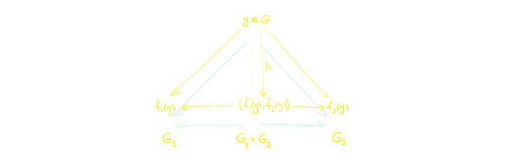
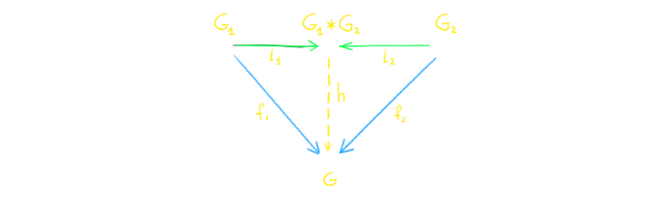
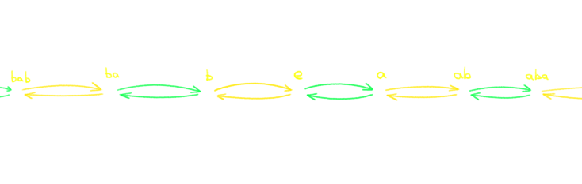
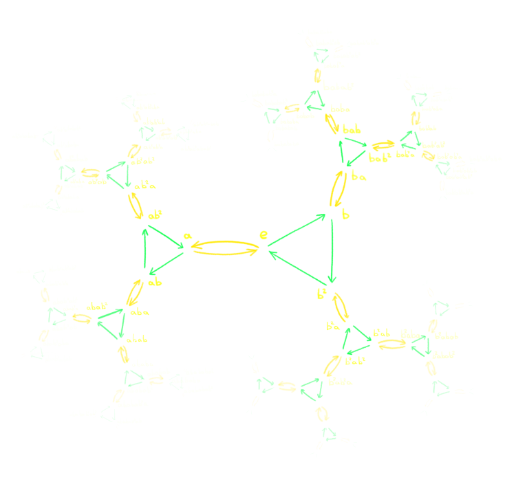
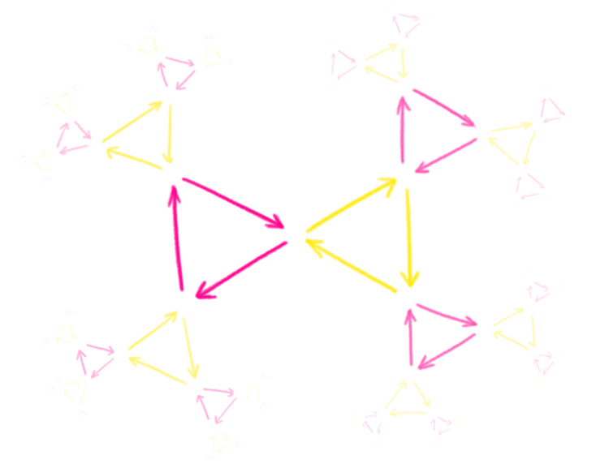
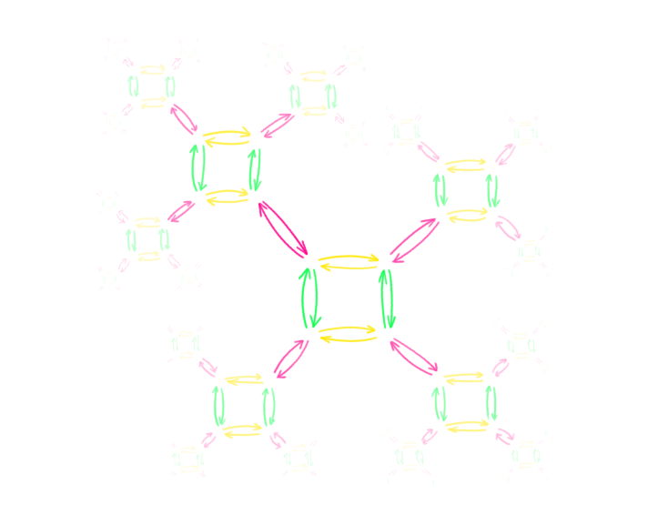
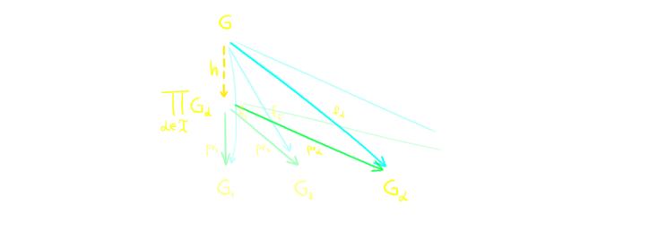
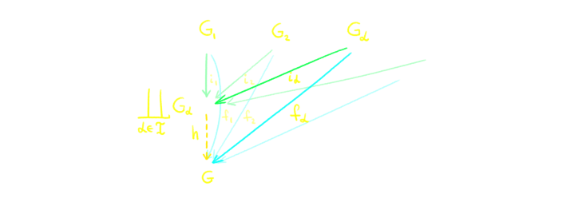
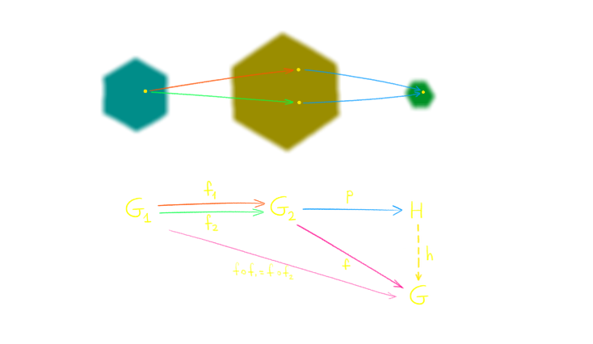

Бонусная лекция: произведения, копроизведения и универсальные свойства
Универсальные свойства, ключи к пониманию,
В них отражается глубина и красота групповых тайн.
На стыке логики и мечты, в гармонии и совершенстве,
Они ведут нас к истине, что скрыта за занавесом бытия.
Философский стих от ChatGPT
Эта небольшая бонусная лекция не является обязательной для понимания дальнейших лекций по топологии, так что её можно
пропустить или вернуться к ней позднее. В ней мы обсудим универсальные свойства — мощный инструмент описания
структур через связь с другими. Мы посмотрим как можно ввести произведения и копроизведения групп на языке диаграмм.
Самое удивительное, что ровно такие же диаграммы мы получим дальше в топологии. Эта часть демонстрирует общий подход,
который используется в современной математике, и который проявляется в совершенно разных теориях.
Универсальное свойство выражает идею "максимальности", "минимальности", "начальности", "конечности" на языке
гомоморфизмов. Начнём с тривиального примера.
Группа \(I\) называется начальной, если для любой группы \(G\) существует единственный гомоморфизм
\[i : I \to G.\]
Любые две начальные группы изоморфны.
Пусть \(I\) и \(J\) начальные группы. Тогда существует единственные гомоморфизмы
\[
\begin{array}{l}
i_I : I \to I, \\
i_J : I \to J, \\
j_I : J \to I, \\
j_J : J \to J. \\
\end{array}
\]
В силу единственности, композиции должны быть определены так:
\[
\begin{array}{l}
i_J \circ j_I = i_I, \\
j_I \circ i_J = j_J. \\
\end{array}
\]
Но у нас для любой группы \(G\) всегда существует гомоморфизм \(\id_G\). Значит, снова в силу единственности,
оба \(i_I\) и \(j_J\) это просто тождественные гомоморфизмы!
\[
\begin{array}{l}
i_I = \id_I, \\
j_J = \id_J. \\
\end{array}
\]
Значит, \(i_J\) и \(j_I\) изоморфизмы и \(I \cong J\).
Итак, если начальная группа существует, то она единственна с точностью до изоморфизма. Осталось её найти. Нетрудно
догадаться, что это будет тривиальная группа \(*\). Действительно, для любой группы \(G\) существует единственный
способ определить гомоморфизм \(i : * \to G\):
\[i(*) = e.\]
Значит тривиальная группа и будет нашей начальной группой.
Когда мы формулируем универсальное свойство, мы можем автоматически сформулировать двойственное к нему, перевернув
все "стрелки".
Группа \(T\) называется конечной (терминальной), если для любой группы \(G\) существует единственный
гомоморфизм \[p : G \to T.\]
Докажите, что конечная группа тоже единственная, с точностью до изоморфизма.
По счастливой случайности, наша тривиальная группа так же является и конечной группой! Действительно, для любой
группы \(G\) существует единственный способ определить гомоморфизм \(p : G \to *\):
\[p(g) = *.\]
Значит тривиальная группа и будет нашей конечной группой.
Универсальные конструкции такого рода могут быть обобщены. Посмотрим на ещё универсальную конструкцию.
Пусть \(G_1\) и \(G_2\) группы.
Группа \( G_2\times G_2 \), вместе с двумя гомоморфизмами
\[
\begin{array}{l}
pr_1 : G_1\times G_2 \to G_1, \\
pr_2 : G_1\times G_2 \to G_2 \\
\end{array}
\]
называется произведением \(G_1\) и \(G_2\), если для любой группы \(G\) и для любых двух гомоморфизмов
\[
\begin{array}{l}
f_1 : G \to G_1, \\
f_2 : G \to G_2 \\
\end{array}
\]
существует единственный гомоморфизм
\(h : G \to G_1\times G_2,\)
что
\[
\begin{array}{l}
f_1 = pr_1 \circ h, \\
f_2 = pr_2 \circ h. \\
\end{array}
\]
Замечание. Обычно такие определения формулируют с помощью коммутативных диаграмм.
В данном случае она будет выглядеть так:
Здесь пунктир обозначает что данная стрелка существует и единственна, а коммутативность означает,
что композиция желтой стрелки и зеленой равна соответствующей синей.
Докажите, что произведение единственно, с точностью до изоморфизма.
Многие уже догадались, что произведение каким-то образом связано с произведением групп, которое мы уже видели
в предыдущих лекциях.
Произведение введённое ранее удовлетворяет универсальному свойству.
Проверим, что старое определение произведения действительно удовлетворяет нашему универсальному свойству.
Вспомним,
\[G_1\times G_2 = \{(g_1, g_2) | g_1 \in G_1, g_2 \in G_2\}.\]
Для начала нам надо найти две проекции \(pr_1\) и \(pr_2\). Но это просто проекции на первую координату и
вторую:
\[
\begin{array}{l}
pr_1((g_1, g_2)) = g_1 \in G_1, \\
pr_2((g_1, g_2)) = g_2 \in G_2. \\
\end{array}
\]
Теперь докажем универсальное свойство. Пусть \(G\) — группа и
\[
\begin{array}{l}
f_1 : G \to G_1, \\
f_2 : G \to G_2 \\
\end{array}
\] — пара гомоморфизмов. Мы хотим найти такой гомоморфизм \(h : G \to G_1\to G_2\), что
\[
\begin{array}{l}
f_1 = pr_1 \circ h, \\
f_2 = pr_2 \circ h. \\
\end{array}
\]
По определению проекций, это означает, что для любого элемента \(g \in G\) мы получаем, что
\[
\begin{array}{l}
f_1(g) = (pr_1 \circ h)(g), \\
f_2(k) = (pr_2 \circ h)(g). \\
\end{array}
\]
Но это значит, что \(h(g)\) это пара, первая координата которой \(f_1(g)\), а вторая — \(f_2(g)\).
Значит единственное возможное отображение \(g\) это
\[h(g) = (f_1(g) , f_2(g)).\]
Очевидно проверяется, что это действительно гомоморфизм.

Произведение групп является "конечной" группой, которая хранит информацию об обеих группах одновременно.
Гомоморфизмы в произведение суть тоже самое что и пары гомоморфизмов в эти две группы.
Теперь, пользуясь той же идеей, что и раньше, мы можем "развернуть" стрелки. Теперь нас будет интересовать
"начальная" группа, которая хранит информацию о двух подгруппах, такая, что гомоморфизмы из неё суть тоже
самое, что и пары гомоморфизмов из наших групп.
Группа \( G_1 * G_2 \), вместе с двумя гомоморфизмами
\[
\begin{array}{l}
i_1 : G_1 \to G_1 * G_2,\\
i_2 : G_2 \to G_1 * G_2 \\
\end{array}
\]
называется копроизведением (или свободным произведением) \(G_1\) и \(G_2\), если для любой группы
\(G\) и для любых двух гомоморфизмов
\[
\begin{array}{l}
f_1 : G_1 \to G, \\
f_2 : G_2 \to G \\
\end{array}
\]
существует единственный гомоморфизм
\(h : G_1 * G_2 \to G,\)
что
\[
\begin{array}{l}
f_1 = h \circ i_1, \\
f_2 = h \circ i_2. \\
\end{array}
\]
На языке диаграмм это выглядит так:

Докажите, что копроизведение единственно, с точностью до изоморфизма.
Значок \(*\) должен был вам что-то напомнить. А именно, свободная группа ранга \(2\) имела обозначение \(\mZ *
\mZ\). И это действительно копроизведение! Докажем, что для любых двух групп существует копроизведение:
Копроизведение существует для любых двух групп.
Для групп \(G_1\) и \(G_2\) введём группу \(G_1*G_2\) следующим образом: пусть
\[
\begin{array}{l}
G_1 \cong \la S_1 | R_1 \ra, \\
G_2 \cong \la S_2 | R_2 \ra, \\
\end{array}
\]
и \(S_1\) и \(S_2\) не пересекаются (это всегда можно сделать). Тогда определим
\[
G_1 * G_2 = \la S_1\cup S_2 | R_1 \cup R_2 \ra.
\]
Элементы этой группы имеют явный вид — это слова из чередующихся
элементов из \(G_1\) и \(G_2\), т.е. элементы вида \['x_1x_2...x_n\ ',\]
где \(x_i\) принадлежит либо \(G_1\), либо \(G_2\). При этом мы рассматриваем такие слова с точностью до редукции,
которая производится следующим образом:
если какой-то \(x_k\) является нейтральным элементом (любой из групп), то его мы его выбрасываем из слова; если
два элемента подряд принадлежат одной и той же группе, то мы вместо этих двух из них подставляем их
произведение.
Операция в этой группе — конкатенация слов, а нейтральный элемент — пустое слово.
Тогда легко определить гомоморфизмы \(i_1 : G_1 \to G_1*G_2\) и \(i_2 : G_2 \to G_1*G_2\):
\[
\begin{array}{l}
i_1(g_1) = \ 'g_1\ ', g_1 \in G_1 \\
i_2(g_2) = \ 'g_2\ ', g_2 \in G_2 \\
\end{array}
\]
Теперь докажем универсальное свойство. Пусть \(G\) — группа и
\[
\begin{array}{l}
f_1 : G_1 \to G, \\
f_2 : G_2 \to G \\
\end{array}
\] — пара гомоморфизмов. Мы хотим найти такой гомоморфизм \(h : G_1*G_2 \to G\), что
\[
\begin{array}{l}
f_1 = h \circ i_1, \\
f_2 = h \circ i_2. \\
\end{array}
\]
По определению наших гомоморфизмов \(i_1, i_2\), это означает, что наш \(h\) уже однозначно определён для
однобуквенных слов: если \(g_1 \in G_1\), \(g_2 \in G_2\), то
\[ p('g_1\ ') = p(i_1(g_1)) = f_1(g_1), \]
\[ p('g_2\ ') = p(i_2(g_2)) = f_2(g_2). \]
Но это значит, что \(h\) однозначно определён и для любого слова, т.к. любой элемент из \(G_1*G_2\) является
произведением однобуквенных слов и
Очевидно проверяется, что это действительно гомоморфизм.
То, что мы определили в частном случае совпадает с тем, как выглядит свободная группа. Действительно,
\[\mZ \cong \la a \ra = \{..., a\inv, e, a, a^2, ...\} \] и
\[\mZ \cong \la b \ra = \{..., b\inv, e, b, b^2, ...\},\]
Значит \(\mZ * \mZ\) это просто группа на двух порождающих без соотношений,
\[\mZ * \mZ = \la a, b \ra. \]
Таким образом, оказалось, что произведение групп и свободное произведение групп это двойственные конструкции!
Когда мы будем изучать топологию, мы увидим, что копроизведение там выглядит гораздо проще, чем в группах.
Рассмотрим еще пару примеров.
Группа \(\mZ/2 * \mZ/2\) изоморфна \(\la a, b | a^2, b^2 \ra\). Она состоит из всех слов вида
\[aba...ab, bab...ab,\]
\[aba...ba, bab...ba.\]
Вот пример как перемножаются эти слова:
\[ababa\cdot aba = ababaaba =\]
\[= ababba = abaaa = aba.\]
Вот граф Кэли этой группы.

Группа \(\mZ/2 * \mZ/3\) изоморфна \(\la a, b | a^2, b^3 \ra\). Примером перемножения элементов будет
\[ab^2aba\cdot ab^2a = ab^2abaab^2a =\]
\[= ab^2abb^2a = ab^2aaa = ab^2a.\]
Граф Кэли этой группы выглядит более красиво:

И ещё чуть-чуть красивых картинок для групп \(\mZ/3 * \mZ/3\) и \((\mZ/2)^2 * \mZ/2\),
где \((\mZ/2)^2\) обозначает просто \(\mZ/2 \times \mZ/2\):


Вообще говоря, произведения и копроизведения можно определить для любого количества групп, даже бесконечного.
Пусть дано семейство групп \( \{G_\alpha\} \), \(\alpha \in \mcI\).
Группа \(\prod_{\alpha} G_\alpha\) с гомоморфизмами
\[pr_\alpha : \prod_{\alpha} G_\alpha \to G_\alpha\]
называется произведением групп \(G_\alpha\), если для любой группы \( G \) и любых гомоморфизмов
\[f_\alpha : G \to G_\alpha\]
существует единственный гомоморфизм
\[h : G \to \prod_{\alpha} G_\alpha \]
такой, что
\[ f_\alpha = pr_\alpha \circ h \]
для всех \(\alpha \in \mcI\).

Группа \(\coprod_{\alpha} G_\alpha\) с гомоморфизмами
\[i_\alpha : G_\alpha \to \coprod_{\alpha} G_\alpha\]
называется копроизведением групп \(G_\alpha\), если для любой группы \( G \) и любых гомоморфизмов
\[f_\alpha : G_\alpha \to G\]
существует единственный гомоморфизм
\[h : \coprod_{\alpha} G_\alpha \to G\]
такой, что
\[ f_\alpha = h \circ i_\alpha \]
для всех \(\alpha \in \mcI\).

Как и всегда, произведения и копроизведения единственны, с точностью до изоморфизма, и мы можем написать явный
вид оных. А именно:
Если \( \{G_\alpha\} \), \(\alpha \in \mcI\) — группы, то их произведение изоморфно группе всех возможных
множеств \((g_\alpha)_{\alpha \in \mcI}\), где \(g_\alpha \in G_\alpha\) c покоординатным умножением
и очевидными проекциями:
\[ (g_\alpha)_{\alpha \in \mcI} \cdot (g'_\alpha)_{\alpha \in \mcI} = (g_\alpha\cdot g'_\alpha)_{\alpha \in \mcI}\]
и для любого \(\beta \in \mcI\)
\[pr_\beta( (g_\alpha)_{\alpha \in \mcI} ) = g_\beta.\]
Например, для \(\mcI = \mN\), произведение \[G_1 \times G_2 \times ... \times G_n \times ...\] это множество всех
бесконечных
последовательностей
\[ (g_1, g_2, ..., g_n, ...) \]
и
\[ pr_k((g_1, g_2, ..., g_n, ...)) = g_k. \]
Если \( \{G_\alpha\} \), \(\alpha \in \mcI\) — группы, и они порождены непересекающимися множествами
порождающих:
\[G_\alpha \cong \la S_\alpha | R_\alpha\ra,\]
\[S_\alpha \cap S_\beta = \varnothing \ при \ \alpha \ne \beta,\]
то их копроизведение изоморфно группе, порожденной объединением порождающих и объединением соотношений:
\[ \coprod_\alpha G_\alpha \cong \la \bigcup_\alpha S_\alpha | \bigcup_\alpha R_\alpha\ra. \]
Гомоморфизмы \(i_\alpha\) определяются вложением соответсвующих порождающих.
Заметим, что если все группы \(G_\alpha\) коммутативны, то их произведение тоже коммутативно. Однако, копроизведение
будет всегда не коммутативным. Иногда возникает потребность ограничить наши универсальные свойства только на мир
абелевых групп. Для этого в произведение и копроизведение везде вместо слов "группа" надо подставить слово "абелева
группа". Также, традиционно в этом случае копроизведение (которое раньше называлось ещё свободным произведением),
получает другое название.
Пусть дано семейство абелевых групп \( \{G_\alpha\} \), \(\alpha \in \mcI\).
Абелева группа \(\prod_{\alpha} G_\alpha\) с гомоморфизмами
\[pr_\alpha : \prod_{\alpha} G_\alpha \to G_\alpha\]
называется произведением групп \(G_\alpha\), если для любой абелевой группы \( G \) и любых
гомоморфизмов
\[f_\alpha : G \to G_\alpha\]
существует единственный гомоморфизм
\[f : G \to \prod_{\alpha} G_\alpha \]
такой, что
\[ f_\alpha = pr_\alpha \circ f \]
для всех \(\alpha \in \mcI\).
Абелева группа \(\bigoplus_{\alpha} G_\alpha\) с гомоморфизмами
\[i_\alpha : G_\alpha \to \bigoplus_{\alpha} G_\alpha\]
называется прямой суммой групп \(G_\alpha\) (или копроизведением), если для любой абелевой
группы \( G \) и любых
гомоморфизмов
\[f_\alpha : G_\alpha \to G\]
существует единственный гомоморфизм
\[f : \bigoplus_{\alpha} G_\alpha \to G\]
такой, что
\[ f_\alpha = f \circ i_\alpha \]
для всех \(\alpha \in \mcI\).
Для мира групп произведение и копроизведение существенно отличались: произведение было "маленьким", а копроизведение
очень "большим" (правда в случае конечного числа групп. В случае бесконечного числа элементов в произведении
становится в некотором смысле "больше"). В случае мира абелевых групп всё становится проще!
Пусть \(A\) и \(B\) — абелевы группы. Тогда произведение и прямая сумма изоморфны и равны обычному
произведению групп:
\[A \oplus B \cong A \times B.\]
Вложения \(i_A\) и \(i_B\) из определения прямой суммы определены как
\[i_A(a) = (a, 0),\]
\[i_B(b) = (0, b),\]
где \(0\) обозначает нейтральные элементы соответствующих групп.
Удивительно, но в случае бесконечного числа групп, прямая сумма и произведение начинают "немного" отличаться!
Пусть \(A_\alpha\), \(\alpha \in \mcI\) — абелевы группы. Тогда их произведение совпадает с произведением
групп в некоммутативном случае, т.е. оно изоморфно группе всех возможных
множеств \((a_\alpha)_{\alpha \in \mcI}\), где \(a_\alpha \in A_\alpha\) c покоординатным умножением
и очевидными проекциями.
Пусть \(A_\alpha\), \(\alpha \in \mcI\) — абелевы группы. Тогда их прямая сумма является подгруппой
их произведения, состоящая из тех последовательностей, где лишь конечное число элементов не является нейтральными.
Т.е.
Все конструкции, которые мы здесь рассмотрели, являются частным случаем так называемых пределов и копределов
диаграмм. Более общо мы их рассмотрим когда-нибудь потом.
Пусть \(G_1\) и \(G_2\) группы, а \(f_1, f_2 : G_1 \to G_2\) два "параллельных" гомоморфизма. Пусть
Докажите, что множество \[H = \{g \in G_1 | f_1(g) = f_2(g)\} \subset G_1\]
вместе с вложением \[i : H \to G_1 \]
является подгруппой и обладает следующим универсальным свойством: для любой группы \(G\) и любого гомоморфизма
\(f: G \to G_1\) такого, что \[f_1 \circ f = f_2 \circ f \]
существует единственный гомоморфизм \(h : G \to H\) такой, что \[f = h \circ i.\]
Гомоморфизм (вложения) \(i\) называется уравнителем (equalizer) гомоморфизмов \(f_1\) и \(f_2\).
Он "уравнивает" два гомоморфизма "слева", т.е. он фильтрует данные, чтобы два гомоморфизма стали равными.
Пусть \(G_1\) и \(G_2\) группы, а \(f_1, f_2 : G_1 \to G_2\) два "параллельных" гомоморфизма.
Докажите, что группа
\[H = G_2 / N, \]
где \(N\) — минимальная нормальная подгруппа, содержащая элементы \(f_1(g)f_2(g)\inv\) для всех
\(g \in G_1\),
вместе с проекцией \[p : G_2 \to H \]
обладает следующим универсальным свойством: для любой группы \(G\) и любого гомоморфизма
\(f: G_2 \to G\) такого, что \[f \circ f_1 = f \circ f_2 \]
существует единственный гомоморфизм \(h : H \to G\) такой, что \[f = p \circ h.\]

Гомоморфизм \(p\) называется коуравнителем (coequalizer) гомоморфизмов \(f_1\) и \(f_2\).
Он "уравнивает" два гомоморфизма "справа", т.е. он склеивает все элементы вида \(f_1(g)\) с элементами
\(f_2(g)\), чтобы два гомоморфизма в итоге стали равными.
 Гомоморфизм (вложения) \(i\) называется уравнителем (equalizer) гомоморфизмов \(f_1\) и \(f_2\).
Он "уравнивает" два гомоморфизма "слева", т.е. он фильтрует данные, чтобы два гомоморфизма стали равными.
Гомоморфизм (вложения) \(i\) называется уравнителем (equalizer) гомоморфизмов \(f_1\) и \(f_2\).
Он "уравнивает" два гомоморфизма "слева", т.е. он фильтрует данные, чтобы два гомоморфизма стали равными.